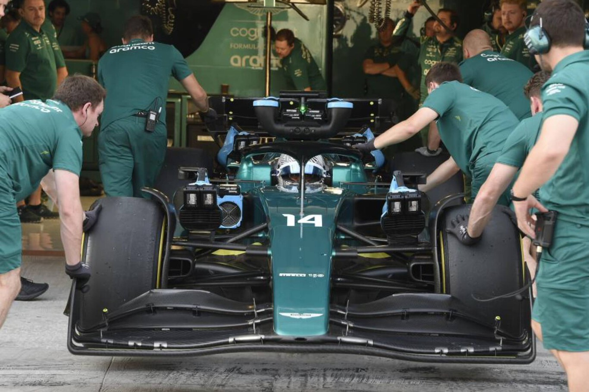

Fernando Alonso está a punto de conocer su nuevo coche de Fórmula 1 para 2023. El próximo lunes se presenta el Aston Martin AMR23 en Silverstone, pero antes de eso el piloto asturiano ha estado rodando con el coche del año pasado en el circuito de Jerez. El test privado se desarrolló el pasado martes, y el miércoles estuvo rodando Lance Stroll.
La presencia de Alonso en Jerez desató la locura en los aledaños del circuito. Gente subida a los muros, mirando por agujeros e incluso alguno se disfrazó de médico para tratar de colarse en el circuito haciéndose pasar por personal sanitario. Alonso sigue levantando pasiones allá por donde va, y sus palabra tras el test solo aumentan la expectación.